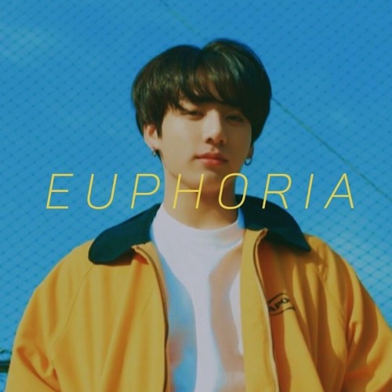
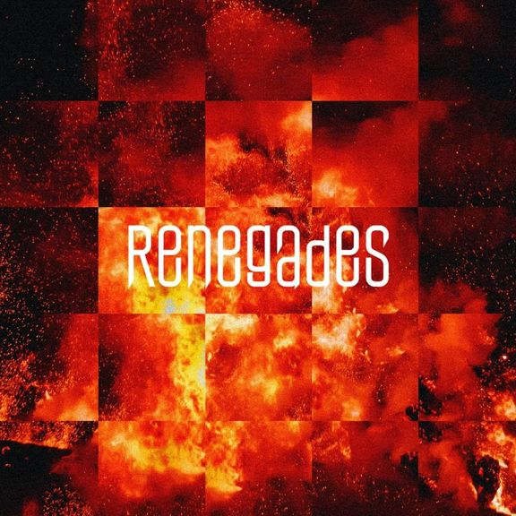
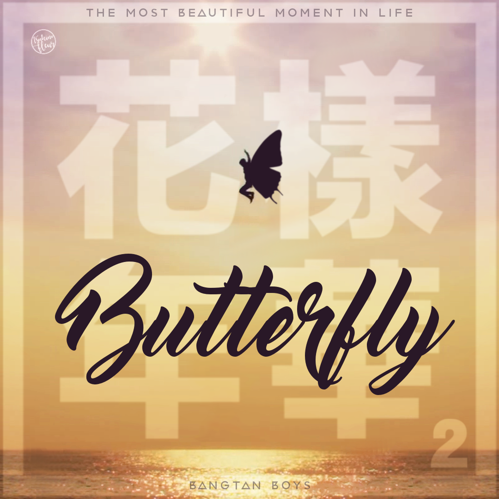
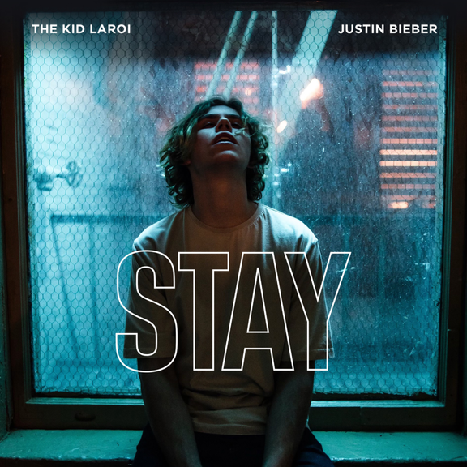

Top 1
Euphoria
This is my top 1 favorite song because it is sung by my bias in BTS which is Jungkook. “Euphoria” is a feel-good song, depicting the happiness associated with young love and new beginnings. There is an underlying tone of how love is fake and not based on attraction.
Top 2

Answer: Love Myself
This is my top 2 in the list because the meaning is quite obvious in the title of the song itself. The lyrics resolve the struggles of BTS explaining self love. It expresses the importance of wholeheartedly loving yourself and BTS' gratitude for their fans for bringing them to this conclusion.
Top 3

Life Goes On
This is a song by BTS and they released it last October 30, 2020 at the peak of the pandemic. The lyrics of this song are offering comfort in times when the world faces the pandemic. The story behind the song declares that even in the face of this new normality, our life goes on and imparts a message of healing to fans and to the world.
Top 4

Spring Day
The song's lyrics give a positive light over a friend's absence, utilizing a seasonal metaphor to deliberate on how things will get better afterward. Also, this song symbolizes what happened in the sinking of Sewol Ferry last April 16, 2014.
Top 5

Waste it on Me
The lyrics of this song depict both a hopeless and hopeful love affair. While one side of the relationship labels the concept of love as a waste, the other strongly advocates for the pursuit.
Top 6
Renegades
This is one of my favorites too because it is sung by my favorite Japanese band called One Ok Rock. The song sees the band fight for what they value despite the tinted glasses that they may face and makes their voices get heard by the “broken” political system.
Top 7

Fake Love
The song's meaning is about one realizing his love, which he thought was fate, but it turned out to be fake love.
Top 8

Yoru ni Kakeru (Racing Into the Night)
It's a catchy song but the meaning behind this song is deep. The song portrays a man who meets a suicidal girl and falls for her. She is attracted to 'death' and always attempts to commit suicide but everytime she does, the man will talk her down and prevent her from doing so. It also says that the God of death will resemble one's ideal person.
Top 9
Butterfly
At first glance, the title of the lyrics looks pretty but the meaning behind this song is deep. The lyrics of this song express the fear of losing someone through the simile of a butterfly. The butterfly could be interpreted as representing the ephemerality of time that risks being lost at a moment's notice.
Top 10
STAY
This is also my favorite song and it is a collaboration between The Kid LAROI and Justin Bieber which details LAROI's wish for his lover's forgiveness and Bieber's admiration for his significant other.